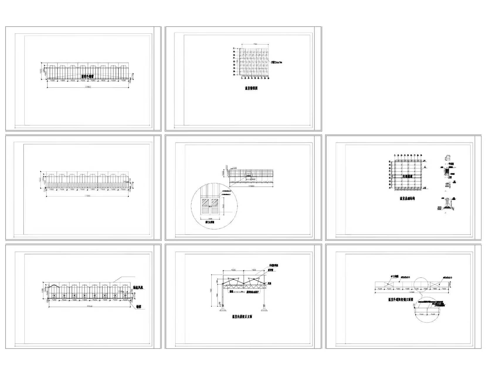

玻璃温室设计 · 施工图与 3D 模型
面向新型耐阴作物的节能减排型大棚。总长 48m、跨度 17.5m，划分为 12 个 4m 开间； 由天正建筑 T20 V9 与 AutoCAD 2021 完成全套 2D 施工图，并用 SketchUp 建立可交互 3D 模型。
- 完整施工图套图（8 张）：背立面、俯视平面、基础图、推拉门大样、内外立剖面及龙骨主剖面。
- 构造细节：锯齿屋面 + 桁架式屋架、独立基础、卡槽系统、侧面外翻通风窗、推拉门节点。
- 轴网与尺寸标注齐全，达到可施工深度；软件贯通 2D 出图 → 3D 建模。